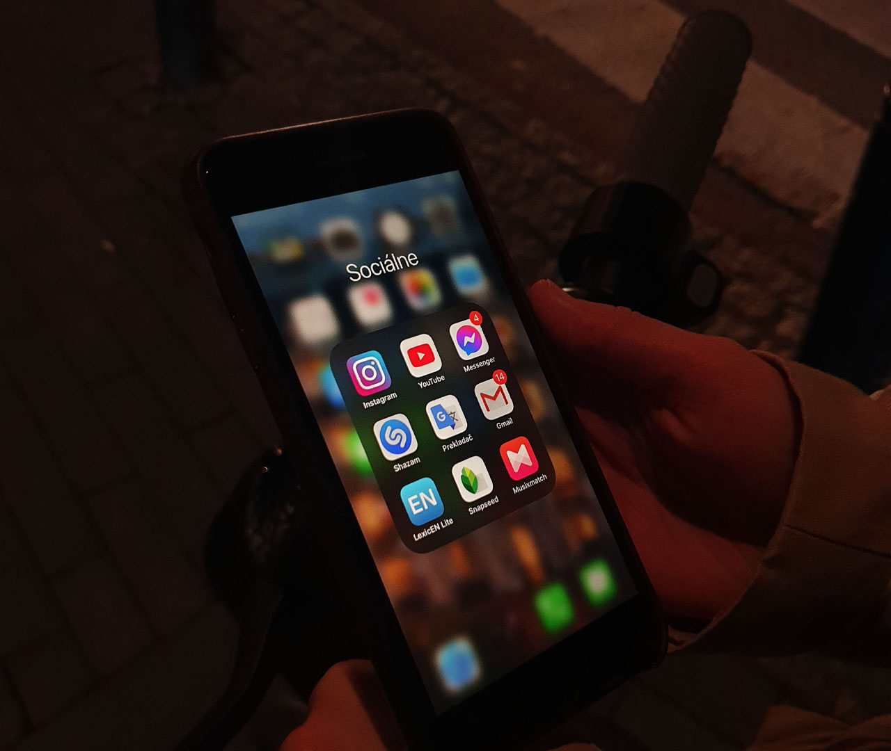

Nowadays our world becomes more digital each day. We tend to spend a lot of time on our computers, smartphones, tablets etc. It’s not surprising that social media apps and sites are one of the biggest reasons we cannot imagine our life without technologies. And even though social media can be fun and entertaining it can also have a negative impact on our mental health. So how social platforms affect our psychological state of mind?
Impact of social media on mental health
Photograph by Erika Lanskaronskyte
Evolving addiction
First, due to the usage of Social media, we become addicted. Social networking site is like an addicting game for users. Once you start using it and getting a positive feedback from your friends or even strangers, you feel the need for constant self-esteem boost. The more response you get from others, the more addicted you get. We anxiously start looking on how many likes we got. Compare ourselves to others, reload our profiles to see what has changed. When time pass, we do all the mentioned things above more frequently.
“If social media controls you and is robbing you of your freedom and good emotional energy chances are you're addicted and it's time to find another hobby.”
― Germany Kent
― Germany Kent
Fear of being left out
The fear of missing on something also plays a huge role on us getting addicted. If everyone else is using social media sites, and if someone does not join in, there’s concern that they will miss jokes, connections, or invitations. Missing experiences can create anxiety and depression. When people look online and see they are excluded from an activity, it can affect thoughts and feelings, and can affect them physically.
Arising insecurities
Photograph by Erika Lanskaronskyte
We can become insecure about ourselves. In social media sites and apps, we can see a lot of pictures and videos. This way, people share the moments of their lives. Usually these moments are far from reality. Because people like to brag and paint their life in bright colors without any downsides. And because of that, we start to compare our life, happiness, appearance, monetary status with others. Sometimes comparing oneself to others, can force people change their lives drastically. For example, lose a lot of weight, start taking medicine that is harmful for our bodies.
Social media plays a dominant role in our lives. Research shows that the rise of social networking has had a profound effect on our mental state. The more we use it, the more likely we are to get addicted, experience anxiety, depression or constantly be fighting with our inner demons.
You can learn more about the impact of social media on mental health by clicking here.